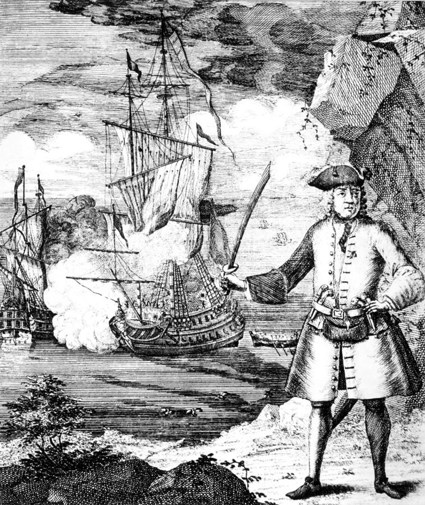
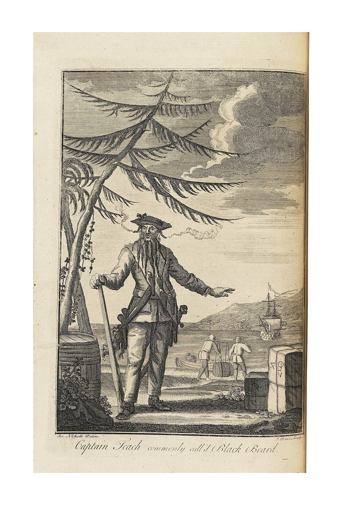
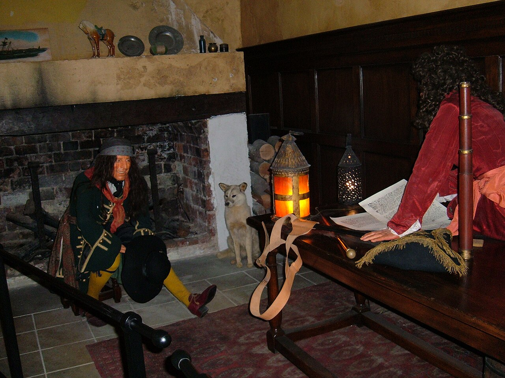
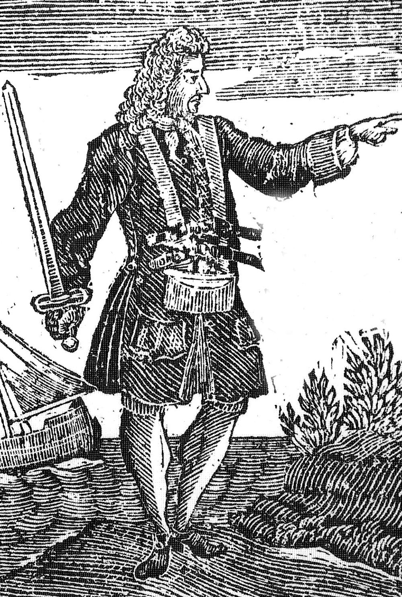
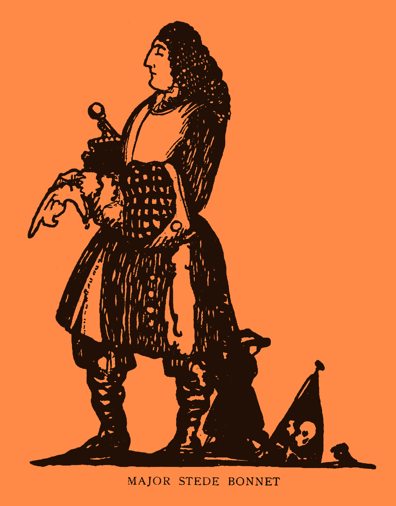
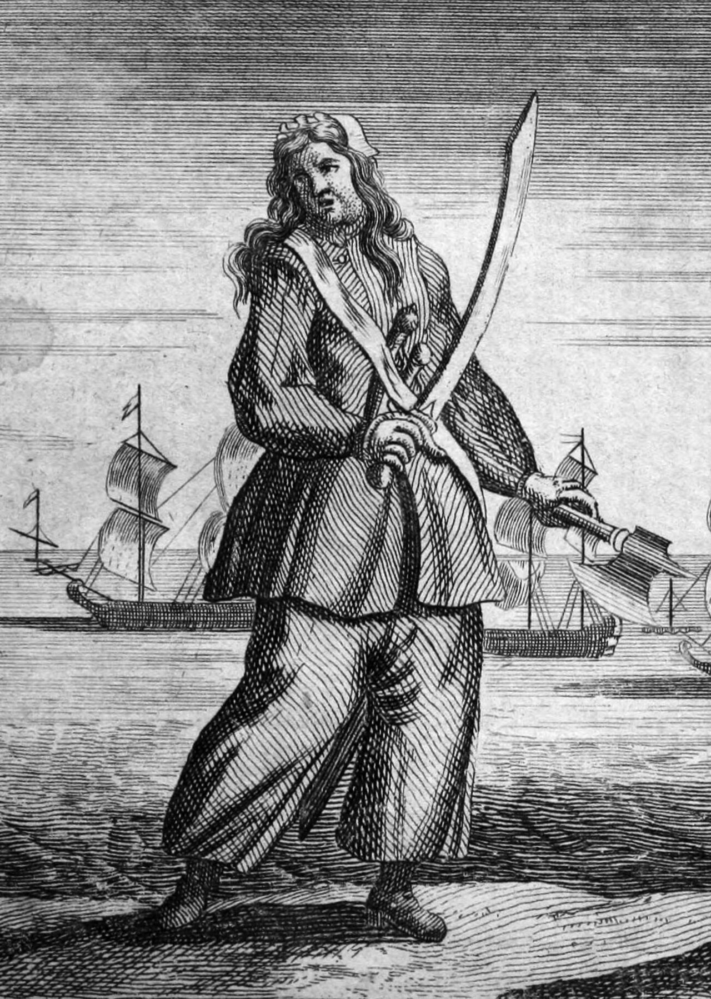
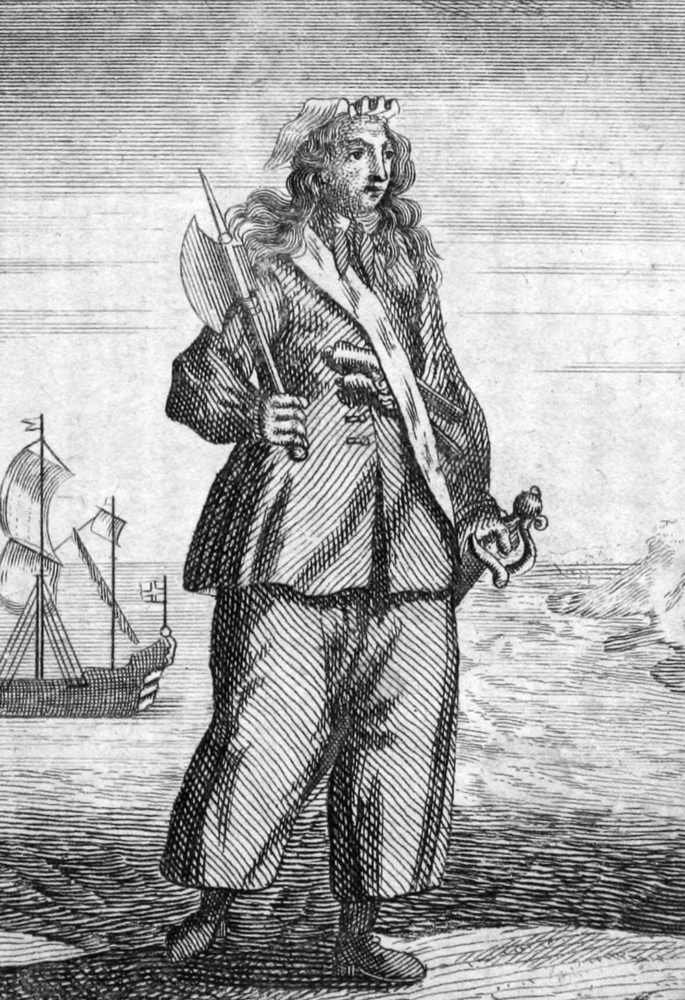
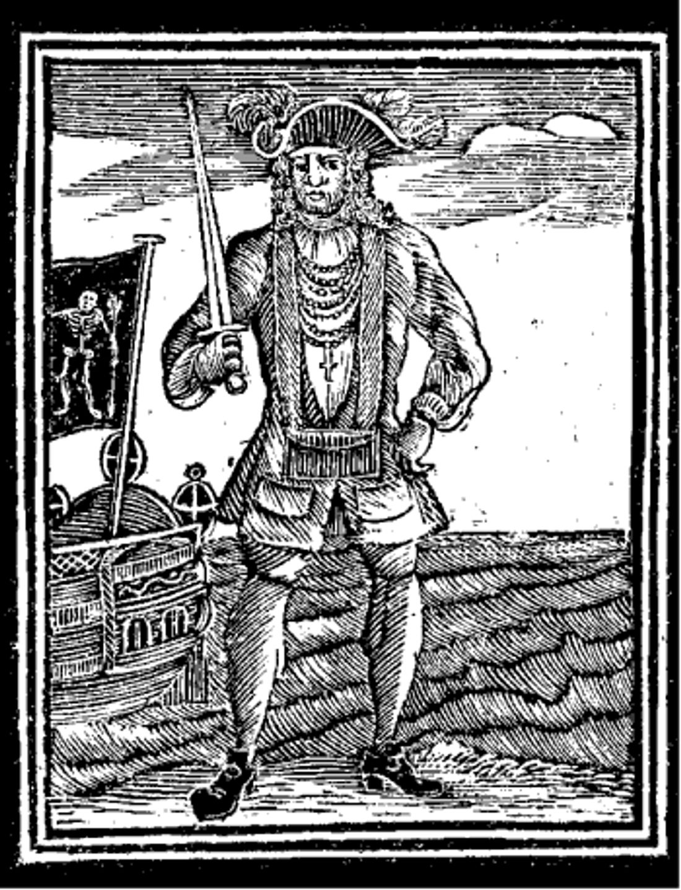
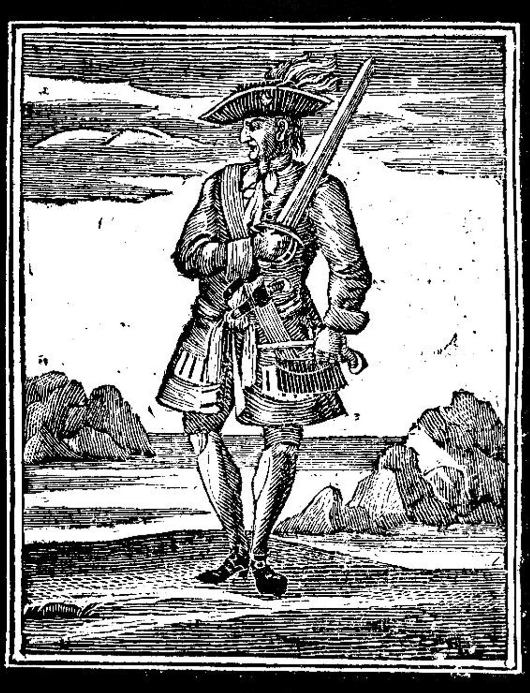
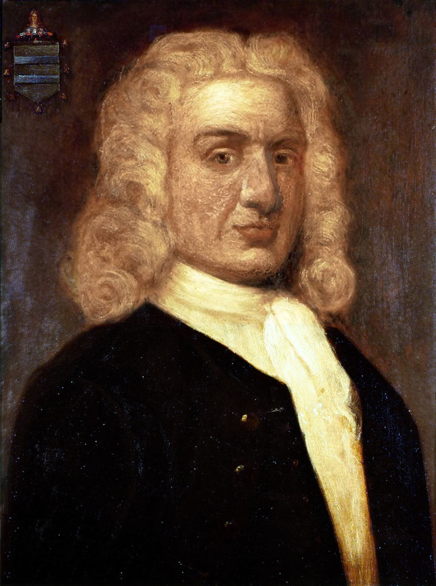

Überblick
Als „Goldenes Zeitalter der Piraterie“ bezeichnen Historiker grob die Zeit von ca. 1650 bis 1730 (manche enger: 1680–1720er). Es war keine durchgehende „Piratenrepublik“, sondern eine Phase ungewöhnlich dichter Seeraubaktivität im Atlantik, der Karibik, an der nordamerikanischen Ostküste, vor Westafrika und im Indischen Ozean. Viele der berühmtesten Namen der Populärkultur stammen von hier.
Ursachen: Kolonialhandel mit wertvollen Ladungen, schwache Marinekontrolle, und vor allem der Übergang von legaler Freibeuterei (Kaperbrief) zu offener Piraterie nach Kriegsenden. Nach dem Spanischen Erbfolgekrieg (Frieden 1713/14) standen Tausende Seeleute und Ex-Privateers ohne Auftrag da, während der Kolonialhandel boomte. Basen wie Tortuga, Port Royal, Nassau (New Providence) und Madagaskar boten Ankerplätze und Absatzmärkte.
Wichtige Quelle und Mythosmaschine zugleich: Captain Charles Johnsons A General History of the Pyrates (1724) formte bis heute das Bild von Bart, Flagge und „teuflischem“ Auftreten – oft dramatisiert. Das Ende kam in den 1720er Jahren durch Marinejagden, Begnadigungen, härtere Gesetze und Massenhinrichtungen.
Zeitabschnitte
Ca. 1650–1680: Bukaniere
Ausgangspunkt war der Kampf um die Karibik nach der englischen Eroberung Jamaikas (1655). Anglo-französische Seefahrer und Jäger (Bukaniere) operierten von Tortuga und Jamaika aus gegen spanische Kolonien und Schiffe – oft mit stillschweigender oder offener Duldung kolonialer Behörden. Die Grenze zu staatlicher Freibeuterei war fließend.
Höhepunkte: Raubzüge Henry Morgans gegen Portobelo (1668), Maracaibo (1669) und Panama (1671). Morgan wurde später geadelt und Vizegouverneur Jamaikas – Symbol dafür, wie Beutekrieg in koloniale Karriere münden konnte. Mit Friedensschlüssen, Begnadigungen und dem Niedergang Tortugas ebbte diese Phase ab; viele wechselten in den Handel, in koloniale Dienste oder später auf den Pirate Round.
1690er: Pirate Round
Als die Karibik enger wurde, lockte der Indische Ozean: luxuriöse Ladungen (Seide, Kattun, Edelmetalle) der Mogul- und Ostindienhandelsrouten, schwache Flottenpräsenz. Die Route führte von Amerika ums Kap der Guten Hoffnung nach Madagaskar (u. a. Sainte-Marie) und weiter in Rotes Meer und Indischen Ozean – der „Pirate Round“.
William Kidd startete als beauftragter Freibeuter/Piratenjäger und endete als verurteilter Pirat (siehe Steckbrief). Die Phase zeigte: Piraterie war global vernetzt und politisch explosiv, weil sie Handelsimperien und Diplomatie traf.
Henry Every als Vorreiter

Every gehört chronologisch in den Pirate Round der 1690er – und zugleich an den Anfang der Legende, die die nächste Generation formte. Als Blackbeard, Roberts, Rackham oder Vane Kinder bzw. Jugendliche waren, war Everys Coup gegen die Mogulflotte (Ganj-i-Sawai, 1695) schon Weltnachricht: immense Beute, diplomatischer Skandal mit Aurangzeb und der East India Company, erste globale Fahndung – und ein Kapitän, der entkam.
Damit lieferte Every das Erfolgsmodell des „Arch Pirate“: Meuterei zum eigenen Schiff (Fancy), Fernfahrt um Afrika, Schlag gegen reichste Ziele, Aufteilung der Beute, Verschwinden. Balladen, Theater (The Successful Pirate) und später Johnson/Defoe machten ihn zum Vorbild. Viele Historiker sehen in ihm nicht den ersten Pirat überhaupt, aber den ersten „Superstar“ des Goldenen Zeitalters – denjenigen, der zeigte, dass Piraterie global, medienwirksam und (für wenige) extrem lohnend sein konnte. Ohne diesen Mythos wäre die Nassau-Generation der 1710er schwerer vorstellbar. Ausführlicher Lebenslauf im Steckbrief.
Ca. 1715–1730: Nach dem Spanischen Erbfolgekrieg
Die populärste Phase. Nassau auf den Bahamas wurde Zentrum der „Flying Gang“ um Benjamin Hornigold und Henry Jennings; von dort gingen Blackbeard, Charles Vane, „Calico“ Jack Rackham, Samuel Bellamy und andere aus. 1718 brachte Woodes Rogers königliche Begnadigungen und Militärdruck nach New Providence; viele nahmen die Amnestie (darunter Hornigold), andere (Vane, zeitweise Blackbeard) nicht.
1718 starb Blackbeard im Gefecht vor North Carolina. 1720 wurden Rackham und seine Crew vor Jamaika gehängt (Anne Bonny und Mary Read entgingen dem Galgen vorerst mit Schwangerschaftsangabe). 1722 fiel Bartholomew Roberts vor Westafrika; Dutzende seiner Männer wurden in Cape Coast Castle verurteilt – darunter die größte bekannte Massenhinrichtung eines Admiralty-Gerichts. Bis ca. 1730 war die organisierte atlantische Piraterie weitgehend gebrochen.
Fokus: Blackbeard

Edward Teach / Blackbeard war weniger der „blutigste“ als der am bewusstesten inszenierte Pirat seiner Zeit. Nach dem Krieg fuhr er unter Hornigold, übernahm Bonnets Revenge und machte aus dem französischen Sklavenschiff La Concorde die Queen Anne’s Revenge. Mit Blockaden und Blitzkaperungen an der Ostküste (u. a. Charleston 1718) erzwang er oft Kapitulation durch Ruf statt Dauergefecht.
Politisch heikel: Gouverneur Charles Eden (North Carolina) gewährte Begnadigung und Schutz; Virginia-Gouverneur Spotswood ließ Maynard trotzdem jagen – juristisch umstritten, weil die Aktion über Provinzgrenzen ging. Am 22. November 1718 starb Blackbeard bei Ocracoke nach heftigem Entergefecht; sein Kopf wurde ausgestellt.
Das Bild mit Lunten im Bart stammt stark aus Johnsons General History und der Presse. Faktisch war Blackbeard Mentor-Netzwerk (Hornigold), Statussymbol (Queen Anne’s Revenge) und Medienfigur in einem – deshalb braucht er neben dem Steckbrief einen eigenen Abschnitt. Steckbrief: Edward Teach / Blackbeard.
Wichtigste Persönlichkeiten (Steckbriefe)
Henry Every („Long Ben“, „Arch Pirate“)
- Lebensdaten
- * 20. Aug. 1659 (Plymouth); verschollen nach ca. 1696/99
- Weg
- Royal Navy / diverse Stationen unklar; 1694 Meuterei auf dem Kaper Charles II. → Fancy
- Höhepunkt
- 1695 Kaperung von Fateh Mohammed und vor allem Ganj-i-Sawai (Mogul-Pilger-/Schatzschiff) – eine der reichsten Beuten der Pirategeschichte; Berichte über extreme Gewalt an Bord
- Danach
- Schutzkauf auf den Bahamas (Gov. Trott), Versuch Pardons auf Jamaika scheitert; Rückkehr nach Europa unter Alias Benjamin Bridgeman; Crewmitglieder gehängt, Every selbst nie gefasst
- Bedeutung
- Vorreiter und Mythosgeber des Goldenen Zeitalters; lebender Beweis, dass man „reich und frei“ entkommen konnte

Benjamin Hornigold
- Lebensdaten
- * ca. 1680 (Norfolk); † 1719 (Schiffbruch vor Mexiko)
- Rolle
- Ex-Privateer; Mitgründer der Nassau-Piratenwelt; Kapitän und Mentor (u. a. Blackbeard)
- Praxis
- 1716/17 aktiv; erbeutete mit Teach u. a. die La Concorde, die Teach zur Queen Anne’s Revenge machte; griff angeblich britische Schiffe möglichst nicht an (später Pardons-Argument)
- Wende
- 1718 königliches Pardon unter Woodes Rogers; wurde Piratenjäger (u. a. gegen Auger, Vane)
- Ende
- 1719 auf Handelsfahrt gesunken
- Bedeutung
- Brücke von Freibeuterei → Piratenrepublik → Staatsdienst

Charles Vane
- Lebensdaten
- † 29. März 1721 in Port Royal (hingerichtet)
- Charakter
- Unnachgiebig, populär bei der Crew, berüchtigt für Härte
- Höhepunkt
- Juni 1718 – einziger Kapitän, der Rogers in Nassau offen widerstand: Brander gegen Rogers’ Schiffe, dann Flucht
- Absturz
- Weigerte sich, ein starkes französisches Kriegsschiff zu entern → Crew (u. a. Rackham) setzte ihn als Feigling ab
- Danach
- Baute erneut eine kleine Flotte auf; Schiffbruch in Honduras; als Matrose aufgenommen, von Hornigold erkannt, ausgeliefert
- Bedeutung
- Symbol des „unbeugsamen“ Nassau-Piraten; Gegenfigur zu Pardons-Annehmern

Stede Bonnet („Gentleman-Pirat“)
- Lebensdaten
- * 1688; † 10. Dez. 1718 (hingerichtet)
- Herkunft
- Reicher, gebildeter Plantagenbesitzer auf Barbados – untypischer Quereinsteiger
- Start
- Kauft und rüstet 1717 die Revenge aus; wenig Seemannschaft, abhängig von der Crew
- Verlauf
- Kaperungen vor Virginia/New York; schwere Verluste gegen Spanier; in Nassau von Blackbeard faktisch entmachtet („Gast“/Gefangener); später wieder eigenständig, rettet von Teach ausgesetzte Männer
- Ende
- 1718 bei Wilmington gefangen, Prozess, Hinrichtung
- Bedeutung
- Kontrastfigur – Privileg statt Not; Stoff für Populärkultur (Our Flag Means Death)

Anne Bonny
- Lebensdaten
- * um 1698 in Kinsale (Irland); Todesdatum unklar (Legenden bis ca. 1782 in Charles Town)
- Quellenlage
- Vor allem Johnsons General History; Verurteilung in den Tryals of Captain John Rackam belegt; biografische Details teils legendär
- Weg
- Nach Charles Town; Heirat mit James Bonny; Nassau; Beziehung zu Rackham; Segeln oft in Männerkleidung
- Rolle
- Mit Mary Read die kämpfende Kerngruppe bei der Festnahme 1720, während Teile der Crew betrunken waren
- Ende
- Todesurteil, Aufschub wegen Schwangerschaft; nicht hingerichtet – weiteres Schicksal unsicher (Freikauf/Rückkehr nach Carolina in späteren Erzählungen)
- Bedeutung
- Seltene dokumentierte Piratin; Ikonenstatus zusammen mit Read

Mary Read
- Lebensdaten
- * um 1685 in London; † 28. April 1721 in Jamaika (Gefängnis/Fieber; Bestattungseintrag)
- Quellenlage
- wie Bonny – Johnson plus Gerichtsakten; Kindheitserzählungen (als Junge erzogen, Militär, Gasthaus in Breda) stark literarisch geprägt
- Weg
- Nach Amnestie kurz Freibeuterin, dann Meuterei zurück zur Piraterie; 1720 bei Rackham/Bonny als „Mark Read“
- Ende
- Todesurteil, Aufschub wegen Schwangerschaft; starb vor einer möglichen Hinrichtung
- Bedeutung
- Zusammen mit Bonny das berühmteste Frauenpaar der Karibikpiraterie; historisch und populärkulturgeschichtlich zentral
Edward Teach / Blackbeard
- Name
- Edward Teach (auch Thatch); Blackbeard
- Leben
- vermutl. * um 1680 in Bristol; † 22. Nov. 1718 vor Ocracoke Inlet (North Carolina)
- Start
- Matrose/Freibeuter im Spanischen Erbfolgekrieg; später unter Benjamin Hornigold; übernahm 1717 u. a. Bonnets Revenge
- Flaggschiff
- Queen Anne’s Revenge (ex französischer Sklaventransporter La Concorde)
- Gebiet
- Bahamas, Karibik, amerikanische Ostküste; Blockade von Charleston 1718
- Stil
- Kultivierte Furcht – langer schwarzer Bart, Waffen, angeblich brennende Lunten im Bart. Viele Schiffe kaperten ohne Schuss; dokumentierte Massaker an Handelsbesatzungen sind kaum belegt (außer seinem letzten Gefecht)
- Ende
- Getötet von Lt. Robert Maynards Truppe; Kopf am Bugspriet ausgestellt. Wrack der Queen Anne’s Revenge nahe Beaufort, NC, archäologisch untersucht
- Bedeutung
- Berühmtester „Markenpirat“ der Epoche; Mythos stärker als reine Beutebilanz

Bartholomew Roberts („Black Bart“)
- Name
- geboren John Roberts; als Pirat Bartholomew Roberts; „Black Bart“ erst postum populär
- Leben
- * 1682 in Little Newcastle (Wales); † 10. Feb. 1722 bei Cap Lopez (Westafrika)
- Start
- ca. 20 Jahre Seefahrt; 1719 von Howell Davis gepresst, nach dessen Tod zum Kapitän gewählt
- Erfolg
- Über 400 gekaperte Schiffe – gemessen an Prisen oft als erfolgreichster Pirat des Goldenen Zeitalters genannt
- Stil
- Auffällige Kleidung (u. a. Scharlach), Tee statt Rum in manchen Berichten; strenge Mannschaftsregeln; eigene Flaggen
- Schiffe
- mehrere Royal Fortune, dazu Ranger u. a.
- Ende
- Im Gefecht mit HMS Swallow (Capt. Chaloner Ogle) tödlich getroffen; 52 Crewmitglieder später zum Tod verurteilt
- Bedeutung
- Höhepunkt und symbolisches Ende der dritten Phase

John „Calico Jack“ Rackham
- Name
- John Rackham; Spitzname Calico Jack (Kalikokleidung)
- Leben
- * 21. Dez. 1682 in Bristol; † 17. Nov. 1720 in Jamaika (hingerichtet)
- Start
- Steuermann unter Charles Vane; setzte Vane ab und wurde Kapitän
- Beute
- Im Vergleich zu Roberts/Blackbeard eher „kleiner Fisch“, regional begrenzt
- Besonderheit
- Crew mit Anne Bonny und Mary Read
- Ende
- Von Jonathan Barnet bei Kap Negril überrascht; gehängt in Santiago de la Vega
- Bedeutung
- Nachruhm vor allem durch Bonny/Read und die ikonische Flagge

William Kidd
- Name
- Captain William Kidd
- Leben
- * 1654 in Greenock (Schottland); † 23. Mai 1701 in London (hingerichtet)
- Start
- Kaufmann in New York; Freibeuterauftrag; Schiff Adventure Galley
- Wendepunkt
- Tod des Geschützmeisters William Moore; Kaperung der Quedagh Merchant (1698)
- Madagaskar
- Konfrontation mit Robert Culliford; Teile der Crew liefen über
- Ende
- In Boston verhaftet, in London gehängt; Leiche in Ketten an der Themse
- Mythos
- „Kidds Schatz“ – teils geborgen, teils Legende
- Bedeutung
- Paradebeispiel Freibeuter → Pirat und Justiz als Politikum
Zusatzkarten (z. B. Henry Morgan) können später ergänzt werden.
Quellen
- Wikipedia – Golden Age of Piracy: https://en.wikipedia.org/wiki/Golden_Age_of_Piracy
- Royal Museums Greenwich – Golden Age of Piracy: https://www.rmg.co.uk/stories/maritime-history/pirates-history-golden-age-piracy
- Wikipedia – Edward Teach: https://de.wikipedia.org/wiki/Edward_Teach
- Wikipedia – Bartholomew Roberts: https://de.wikipedia.org/wiki/Bartholomew_Roberts
- Wikipedia – Calico Jack: https://de.wikipedia.org/wiki/Calico_Jack
- Wikipedia – William Kidd (Pirat): https://de.wikipedia.org/wiki/William_Kidd_(Pirat)
- Wikipedia – Henry Morgan: https://en.wikipedia.org/wiki/Henry_Morgan
- Smithsonian Magazine – Who Were the Real Pirates of the Caribbean?: https://www.smithsonianmag.com/history/who-were-the-real-pirates-of-the-caribbean-180984343/
- Captain Charles Johnson – A General History of the Pyrates (1724; dramatische Zeitquelle, mit Vorsicht)
- World History Encyclopedia – Goldenes Zeitalter der Piraterie: https://www.worldhistory.org/trans/de/1-19990/goldenes-zeitalter-der-piraterie/
- Bildquellen: Wikimedia Commons – historische Stiche und Darstellungen (u. a. Blackbeard 1734, Every, Bonnet, Bonny/Read 1724, Vane, Hornigold/Rogers, Port Royal).